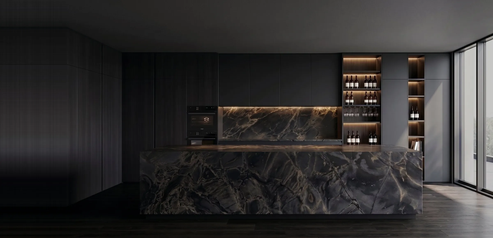
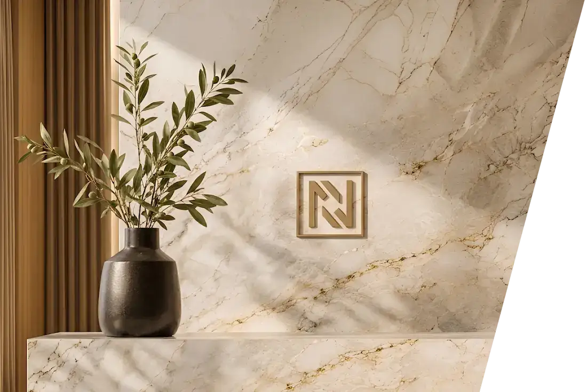
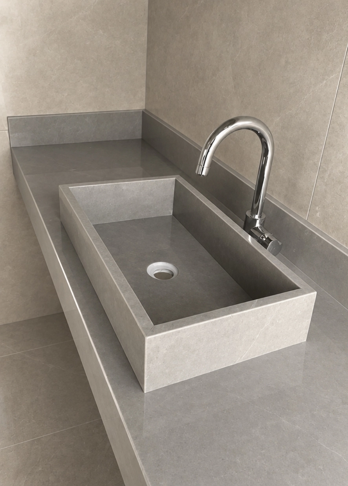
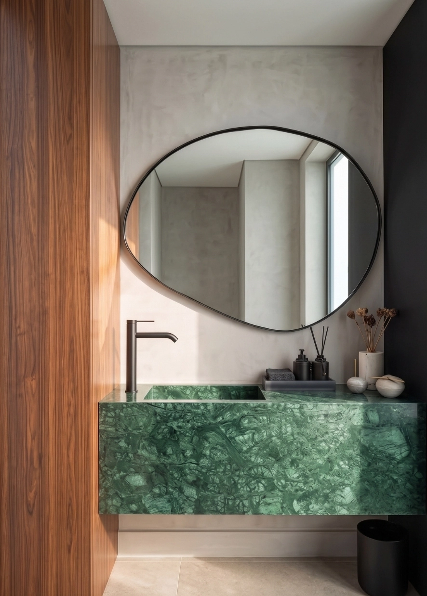
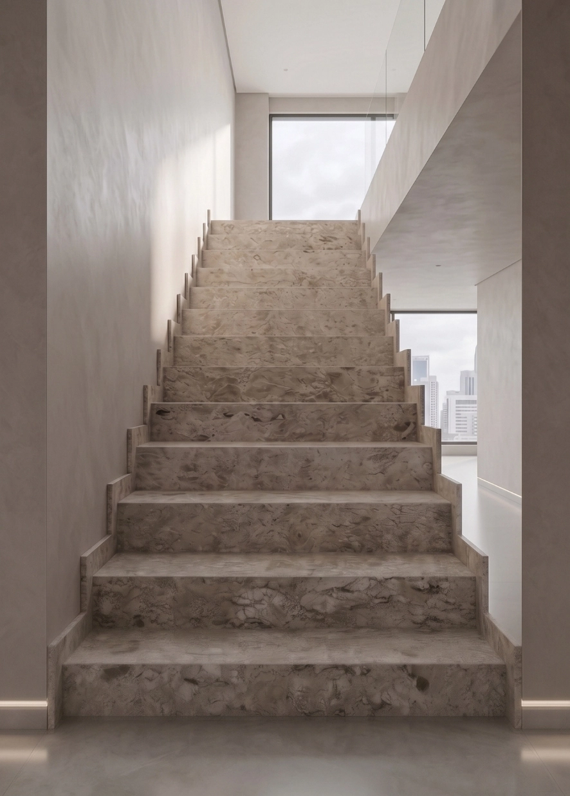
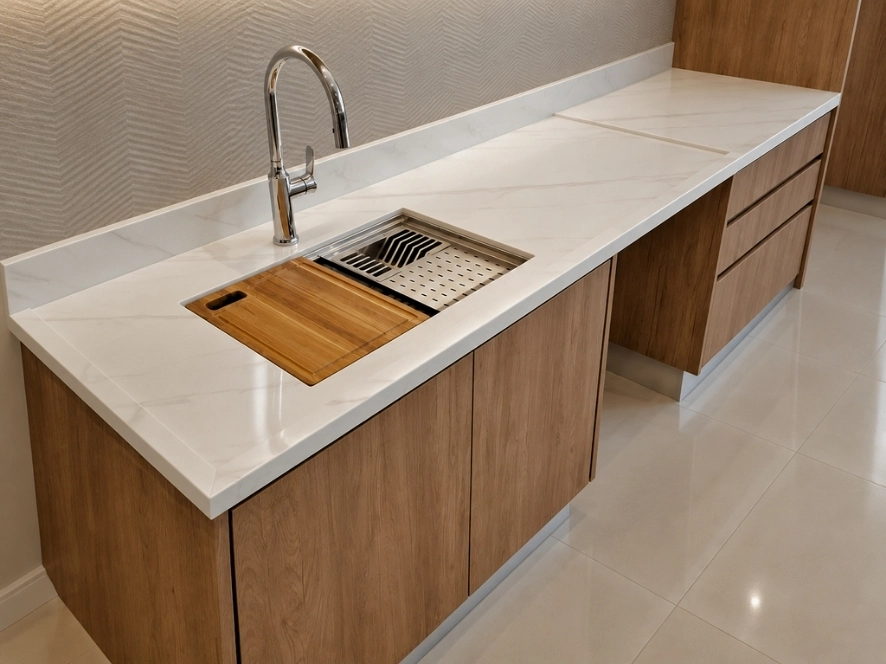
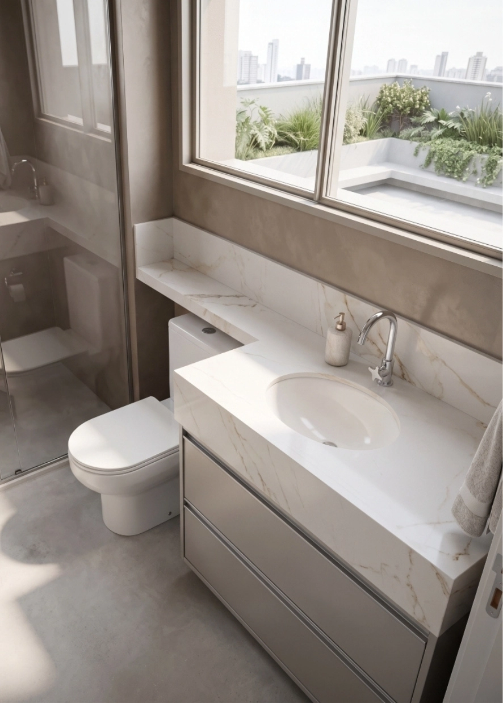
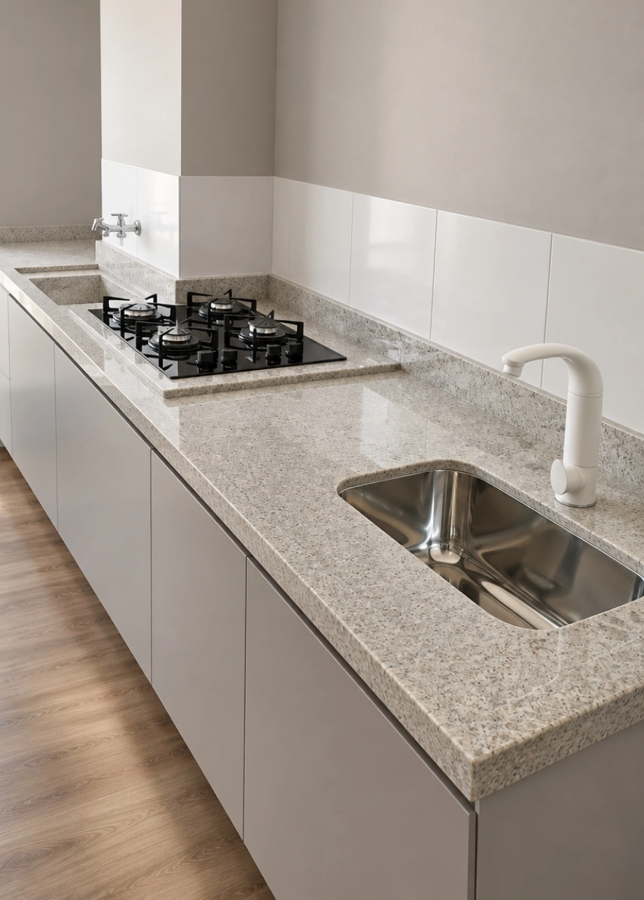

Vai construir ou reformar em Praia Grande?
Soluções em pedra sob medida para ilhas, revestimentos, bancadas e outros projetos. Conte à Marmoraria Estilo Nobre o que você planeja e receba seu orçamento.
Solicitar orçamentoCada ambiente começa com uma ideia.
Na Marmoraria Estilo Nobre, transformamos ideias em soluções em pedra com a exclusividade que seu ambiente merece.
Executamos projetos sob medida em rochas naturais e industrializadas, com atenção à escolha dos materiais e ao cuidado na execução,
buscando valorizar cada espaço por meio da beleza natural da pedra.
Localizada em Praia Grande, atendemos todo o litoral paulista.

- Mármores
- Granitos
- Quartzitos
- Quartzos
- Ultracompactos
A pedra certa para cada ambiente.
De bancadas de cozinha a lavatórios, revestimentos e peças sob medida, a pedra pode assumir diferentes funções em projetos residenciais e comerciais. Explore as possibilidades e encontre a solução que combina com o seu projeto.
Ou veja projetos selecionados-
A bancada é um dos elementos centrais da cozinha, reunindo diferentes funções em uma mesma superfície. Além das áreas destinadas à pia e ao cooktop, o projeto pode contemplar frontões, ilhas, balcões e prolongamentos que ampliam as possibilidades de uso e integração do ambiente. Cada composição considera as dimensões do espaço, a disposição dos equipamentos e a escolha da pedra, buscando um resultado que harmonize funcionalidade e estética.
Conversar sobre minha cozinha -
Bancadas e lavatórios em pedra ajudam a definir a composição de banheiros e lavabos, aproveitando o espaço e valorizando os detalhes do ambiente. As possibilidades incluem superfícies para cubas de apoio ou embutidas, modelos com cuba integrada, frontões e laterais que acompanham o desenho do projeto. Com diferentes formatos e dimensões, cada solução pode ser pensada de acordo com as características do espaço e a proposta desejada.
Conversar sobre meu banheiro -
Em áreas gourmet, a pedra pode participar de diferentes espaços de preparo, apoio e convivência. Bancadas, ilhas, balcões e superfícies próximas à churrasqueira podem ser desenvolvidos de acordo com a disposição dos equipamentos e a integração com os demais elementos do ambiente. Seja em uma área compacta ou em um espaço mais amplo, a composição das superfícies contribui para aproveitar melhor o espaço e criar uma unidade visual entre os elementos.
Conversar sobre minha área gourmet -
A pedra também pode assumir um papel importante na composição de escadas, paredes e outras superfícies arquitetônicas. Em escadas, sua aplicação acompanha o desenho dos degraus, enquanto revestimentos permitem explorar diferentes texturas, formatos e combinações com os demais acabamentos do ambiente. São soluções que ajudam a criar continuidade visual entre os espaçose acrescentam personalidade aos projetos.
Conversar sobre meu projeto -
Alguns projetos pedem soluções que vão além das aplicações convencionais. Tampos, mesas, cubas, bancadas com formatos diferenciados e outras peças podem ser pensados conforme as dimensões, características e necessidades de cada ambiente. A partir da ideia ou referência apresentada, é possível avaliar os materiais, as possibilidades de execução e os detalhes necessários para desenvolver uma peça que se integre ao projeto.
Conversar sobre peças sob medida
Inspiração
em cada detalhe.
Uma seleção de projetos que revela a beleza dos materiais e o cuidado presente em cada acabamento
-




-




-




Vamos conversar sobre seu projeto?
Conte para nós o que você está planejando. Seja uma construção, reforma ou renovação de ambiente, queremos conhecer suas ideias, entender suas necessidades e apresentar as possibilidades em pedras naturais e industrializadas.
Iniciar conversa-
WhatsApp
(11) 94868-2024
-

E-mail
marmorariaestilonobre@gmail.com
-

Endereço
R. dos Chapéus de Sol, 11 Jd. Samambaia, Praia Grande - SP